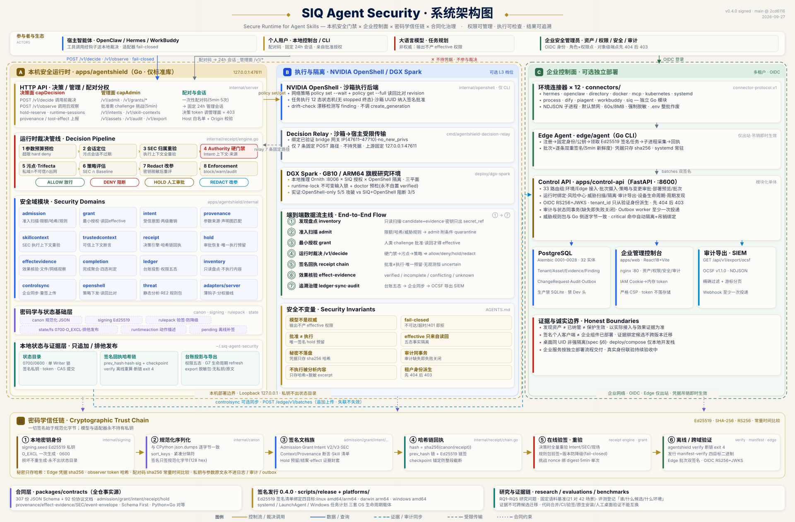

唯一裁决核心
Skill 准入扫描、最小授权、八步运行时裁决管线、签名回执哈希链与效果核验，全部在一个仅标准库的 Go 二进制内；决策与管理 API 分权，配对码兑换固定 24 小时管理会话。
SECURE RUNTIME FOR AGENT SKILLS
SIQ 将用户授权、参数来源、工具执行和实际效果连接成可检查的证据链。Skill 负责引导接入，本地 Go 程序执行裁决，宿主钩子在工具调用前后介入；每一步都由密码学签名锚定。
Skills 给 Agent 能力，SIQ 给能力边界。
两条使用路线：个人端在本机管理与核验自己的智能体；企业端经控制面、Edge 与 Connector 集中治理。面向研究者、工具与适配器开发者，以及评估 Agent 权限治理的平台团队。
01 / SYSTEM ARCHITECTURE
本机安全门禁（Go 运行时 · 127.0.0.1:47611）、可选执行隔离（NVIDIA OpenShell / DGX Spark）、企业控制面（FastAPI · Edge · 12 个 Connector），由合同层与密码学信任链贯穿。模型在任何平面都不是权威。

Skill 准入扫描、最小授权、八步运行时裁决管线、签名回执哈希链与效果核验，全部在一个仅标准库的 Go 二进制内；决策与管理 API 分权，配对码兑换固定 24 小时管理会话。
可选 L3 档位把 Agent 关进 NVIDIA OpenShell 沙箱：网络策略下发后读回比对，沙箱 UUID 纳入签名批准；Decision Relay 仅允许七条固定路径回传宿主裁决。
多租户 Control API、仅出站的 Edge Agent 与十二个环境 Connector；审计与状态同事务落库，OCSF NDJSON 导出对接 SIEM。企业组件不在个人安装包内，按独立流程部署。
逐文件级的 CLI、HTTP 路由与包依赖关系另见源码架构页（由发布工作流从源码重新扫描生成）。
02 / AUTHORIZATION · PROVENANCE · EFFECTS
以运行时检查约束已接入的执行路径，将授权事实与模型提议、结果声明分别处理。
静态扫描 Skill 并记录能力需求。Grant、Intent、Skill 执行上下文（SEC）与受信 Context 约束动作；模型输出不能自行创建有效权限。
在工具入口检查任务授权与参数来源，需要审批的动作在执行前重新核验。相同收件人值，也可能因来源不同得到不同决策。
签名回执关联动作，独立观察文件或受控接收端的效果。缺失或冲突的证据不能被工具的“成功”返回替代。
03 / CRYPTOGRAPHIC TRUST CHAIN
一切签名始于规范化字节：本地 Ed25519 密钥只存状态目录，模型与适配器永不持有私钥；秘密只存哈希，不进日志、审计或导出。
签名种子一次性排他生成、永不重写；规范化序列化与 CPython 逐字节一致，Python 与 Go 两侧签名可以互相验证。
准入裁决、Grant、Intent、SEC、来源断言、审批预留与效果封套都是签名文档；批准挑战绑定授权摘要，五分钟单次有效。
每条决策与观察回执携带 prev_hash 与 Ed25519 链签；checkpoint 文件防整段截断，verify 可离线重算，断链即失败退出。
每次裁决重新验证 Intent、SEC、会话绑定与授权现场摘要；外部规则包验签且禁止降级，任何失败一律 fail-closed。
发行清单用 Ed25519 绑定 Skill 实际内容与四个平台二进制的摘要 pin；篡改 Skill、篡改二进制、错误公钥均被拒绝。
企业侧批次与逐条证据双重签名、五分钟新鲜度窗口，设备凭据只存哈希且吊销即时生效；控制台身份走 OIDC RS256 + JWKS。
04 / OBSERVABLE SCENARIOS
任务是“分析仓库、生成报告并交付给指定联系人”。显式模型夹具驱动真实 SIQ 组件，可直接观察以下检查结果。
任务授权、受信联系人以及文件和接收端效果均满足要求，完成状态通过核验。
不可信工具结果提出更换收件人，运行时阻止超出授权的交付动作。
相同收件人值分别来自可信数据库与 MCP；可信路径获准，MCP 路径被拒绝。
工具返回成功，受控接收端却没有对应事件。任务保持未完成，等待所需效果证据。
这些场景验证指定安全路径，不是实模型遭受提示注入时的攻击成功率测量。阅读评价协议 ↗
05 / REPRODUCIBLE EVIDENCE
以下是已归档的特定运行结果；每项指标保留自己的语料、环境和证据记录，不同运行的分母不合并。
| 归档观察 | 结果 | 证据与范围 |
|---|---|---|
| 0.4.0 固定源码 CI | 6 / 6 工作流成功 | 对应提交 2cd6116；工作流数量不是测试项数。 |
| 0.4.0 最终包验证 | 8 / 8 资产一致 | 清单/摘要、官方根签名、四目标 pin 与最终包验证；公开回读与本机参考逐字节一致。 |
| 0.4.0 篡改拒绝 | 3 / 3 拒绝 | 修改 Skill、修改二进制、错误发行公钥均拒绝；未暂存不可信程序。 |
| 0.4.0 原生链路 | Linux ARM64 通过 | 全新私密状态完成 start / status / pair / 控制台 / stop；其余三目标仅交叉构建与 pin 核对，不等于原生验收。 |
| 固定控制案例（归档） | 23 / 23 满足预期 | 开发期间的受控夹具报告，不是干净发布验收。 |
| 回执与效果封装（归档） | 318 条回执 · 20 个效果封装 | 独立验证程序的输出。 |
| 普通 Linux 浏览器复现（归档） | 9 / 9 场景通过 | 托管 Ubuntu 记录；无需 GPU 或模型密钥。 |
历史实模型实验的成功与失败均保留在原始报告中，不与固定夹具合并分母。托管 CI 复现不等于外部研究者的独立复现；当前未宣称已发表论文、DOI 或独立制品认证。
06 / QUICK START
准备 Git、Go 1.26.6、Python 3.12+、Node.js 22 / npm。首次安装依赖需要联网；演示无需 GPU、PostgreSQL 或企业登录。
打开 http://127.0.0.1:47621/demo，输入终端给出的一次性配对码，选择上述场景。
请使用新克隆的目录，并显式保留 --mode test；默认 demo 模式会使用已配置的真实模型。日常使用请改用 0.4.0 签名安装包，按包内 INSTALL.md 先验签再启动。
git clone https://github.com/maoyadongsh/siq-agent-security.git
cd siq-agent-security
bash scripts/hackathon/start.sh --mode test --port 47621
bash scripts/hackathon/healthcheck.sh
bash scripts/hackathon/pair.sh
体验完成后停止该实例：bash scripts/hackathon/stop.sh。再次启动前按复现指南归档旧状态；配对码和私密状态留在本机。
07 / COMPONENTS & INTEGRATION
本地演示独立运行。更广的接入与部署范围，分别以适配器能力矩阵和企业运行手册为依据。
Secure Agent 规划任务并选择研究、报告和交付 Skills；Go 运行时负责准入、授权、管理 API、签名回执与效果核验。
本地操作指南 →Hermes、OpenClaw 与 WorkBuddy 的具体工具入口接入。存在适配器不代表所有版本、所有调用路径都受保护。
接入能力矩阵 →多租户资产、证据、策略审批和 Edge 协调。Connectors 采集配置、目录、框架、进程、容器及集群信息。
企业部署与验证条件 →CLI、HTTP 路由、包依赖与状态转换，由发布工作流重新扫描生成。
08 / SIGNED RELEASE
siq-agent-security-v0.4.0 是当前 Latest 正式版，源码固定提交 2cd6116。请选择 Release 的八份安装资产；GitHub 自动源码压缩包及仓库内 Skill 仍是开发源码，不能作为签名安装包使用。
签名清单用发行密钥 Ed25519 绑定 Skill 实际内容、版本化下载 URL 与四个二进制摘要；SOURCE-INFO.json 与校验和是描述性证据，不是额外的源码签名。安装按包内 INSTALL.md 先验签、再使用新状态目录启动。
本次仅 Linux ARM64 完成最终包原生首次启动链路；其余目标未完成原生安装、系统服务、升级/回滚、Apple 公证或 Windows Authenticode 验收。清单签名不等于公证；正式版名称不改变这些证据边界。完整说明见签名安装包的构建与验证与0.4.0 发行记录。
研究首发预发布 research-v0.1.0-rc.1 固定在 aefab111，包含源码归档、版本信息和校验清单，不包含新编译的二进制或模型权重。签名绑定本仓库 GitHub Actions 发布工作流身份，签署 SHA256SUMS，覆盖源码归档和 SOURCE-INFO.json；2026-09-09 为原附件补充独立签名，未改写原附件。
验证时必须同时核对签名身份与文件摘要。安装 Cosign（已验证版本 v3.1.3）与 GitHub CLI，创建一个新的下载目录：
mkdir siq-release-verify
cd siq-release-verify
gh release download research-v0.1.0-rc.1 --repo maoyadongsh/siq-agent-security \
--pattern SHA256SUMS --pattern SHA256SUMS.sigstore.json \
--pattern SOURCE-INFO.json --pattern siq-agent-security-research-v0.1.0-rc.1.tar.gz
cosign verify-blob --bundle SHA256SUMS.sigstore.json \
--certificate-identity 'https://github.com/maoyadongsh/siq-agent-security/.github/workflows/release-signing.yml@refs/heads/main' \
--certificate-oidc-issuer 'https://token.actions.githubusercontent.com' \
SHA256SUMS && sha256sum --check --strict SHA256SUMS
official_signature=false 保留首次打包的历史状态。完整验证说明与签名范围 ↗
09 / SECURITY BOUNDARIES
结合威胁模型与证据范围评估适用场景。
当前桌面模式不能阻止同 UID 恶意进程读取密钥或改写状态；Python ToolGateway 不是 OS 沙箱。
只覆盖正确接入的执行路径。来源注册与敏感级别分类仍依赖可信操作者。
文件与受控接收端的效果观察，不代表所有外部 SaaS 的交付证明；普通结果关联与独立效果证据的证明范围不同。
固定小语料与模型夹具不构成通用提示注入防护或生产安全认证；跨平台编译不等于原生平台验收；签名个人客户端不等于企业组件已部署。
BUILD · REPRODUCE · REVIEW
欢迎普通 Linux 复现、来源解释、夹具诊断、指标纠错，以及有来源依据的负向案例。